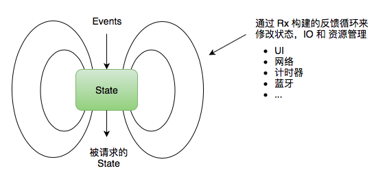

RxFeedback


作者
Krunoslav Zaher 是 RxFeedback 的作者。他也是 RxSwift 的创始人以及 ReactiveX 组织 的核心成员。他有 16 年以上的编程经验（ VR 引擎，BPM 系统，移动端应用程序，机器人等），最近在研究响应式编程。
介绍
RxSwift 最简单的架构

public static func system<State, Event>(
initialState: State,
reduce: @escaping (State, Event) -> State,
feedback: (Observable<State>) -> Observable<Event>...
) -> Observable<State>
模拟一个反馈循环系统。
模拟系统将在被订阅后启动，并且在订阅被释放后停止。
系统状态用 State 表示，事件用 Event 表示。
示例
Observable.system(
initialState: 0,
reduce: { (state, event) -> State in
switch event {
case .increment:
return state + 1
case .decrement:
return state - 1
}
},
scheduler: MainScheduler.instance,
feedback:
// UI is user feedback
UI.bind(self) { me, state -> UI.Bindings<Event> in
let subscriptions = [
state.map(String.init).bind(to: me.label!.rx.text)
]
let events = [
me.plus!.rx.tap.map { Event.increment },
me.minus!.rx.tap.map { Event.decrement }
]
return UI.Bindings(subscriptions: subscriptions, events: events)
}
)
这是一个简单计数的例子，只是用于演示 RxFeedback 架构。
State
系统状态用 State 表示：
typealias State = Int
- 这里的状态就是计数的数值
Event
事件用 Event 表示：
enum Event {
case increment
case decrement
}
- increment 增加数值事件
- decrement 减少数值事件
当产生 Event 时更新状态：
Observable.system(
initialState: 0,
reduce: { (state, event) -> State in
switch event {
case .increment:
return state + 1
case .decrement:
return state - 1
}
},
scheduler: MainScheduler.instance,
feedback: ...
)
- increment 状态数值加一
- decrement 状态数值减一
Feedback Loop
将状态输出到 UI 页面上，或者将 UI 事件输入到反馈循环里面去:
Observable.system(
initialState: 0,
reduce: { ... },
scheduler: MainScheduler.instance,
feedback:
// UI is user feedback
UI.bind(self) { me, state -> UI.Bindings<Event> in
let subscriptions = [
state.map(String.init).bind(to: me.label!.rx.text)
]
let events = [
me.plus!.rx.tap.map { Event.increment },
me.minus!.rx.tap.map { Event.decrement }
]
return UI.Bindings(subscriptions: subscriptions, events: events)
}
)
- 将状态数值用
label显示出来 - 将增加按钮的点击，作为增加数值事件传入
- 将减少按钮的点击，作为减少数值事件传入
优势
这就是 RxFeedback 架构，它的优势是：
- 简单
- 直接
- 容易调试
- 能被应用到任何级别
- 完美支持依赖注入
- 支持循环依赖
- 完全将业务逻辑分离（跨平台）
示例
下一节将用 Github Search 来演示如何使用 RxFeedback。